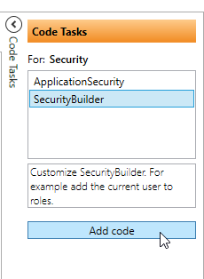

Add user to roles
You can set the roles for the current user in code. This is done by selecting the "Code Task" SecurityBuilder and click "Add code"

In the build methode, you just add the rolename, that the current user should be in.
public partial class ApplicationSecurityBuilder
{
public async override Task Build()
{
//this adds the current user to admin role.
this.Roles.Add(ApplicationRoles.Admin.RoleName);
await base.Build().ConfigureAwait(false);
}
}
And now you can inject the IApplicationSecurity wherever you need it and check the operation (returns a boolean).
For example, in the Entity Security for Products, you might use it like this (CanEditProducts is an operation defined in the designer):
public partial class ProductsSecurity
{
private readonly IApplicationSecurity _applicationSecurity;
public ProductsSecurity(IApplicationSecurity applicationSecurity)
{
_applicationSecurity = applicationSecurity;
}
public override bool CanUpdate()
{
return _applicationSecurity.CanEditProducts;
}
}
You might consider using the Security AppExtension. See here